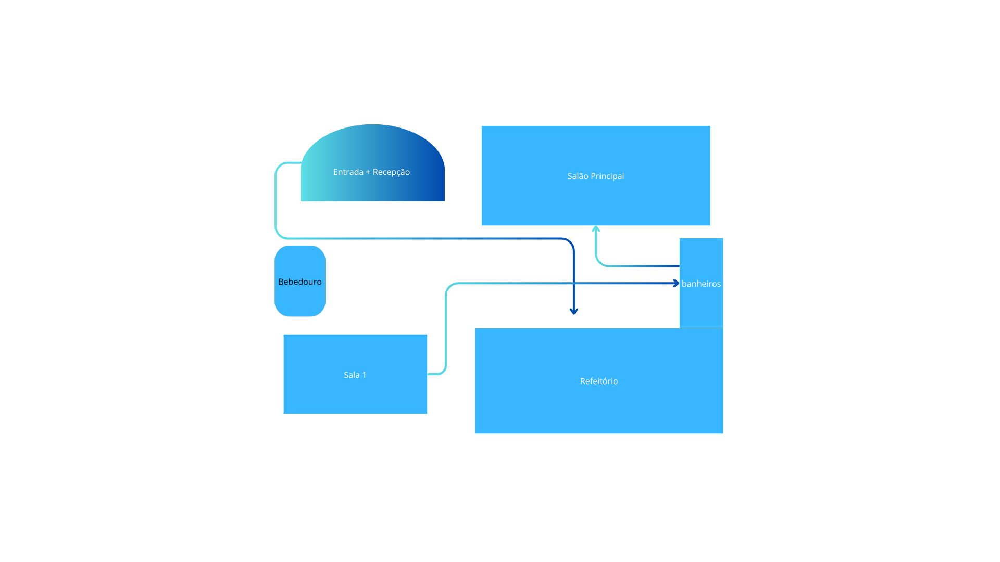

Programação Completa
- 09h00 – Abertura Oficial do Evento
- 09h30 – Palestra: “O Futuro Começa com Você” – Bruno Teixeira
- 11h00 – Palestra: “Inteligência Artificial no Cotidiano” – Profa. Marina Lopes
- 12h30 – Intervalo para Almoço
- 14h00 – Palestra: “Empreendedorismo Jovem” – Camila Duarte
- 15h30 – Palestra: “Tecnologia Sustentável” – Lucas Almeida
- 16h30 – Encerramento e Agradecimentos
Mapa do Evento
